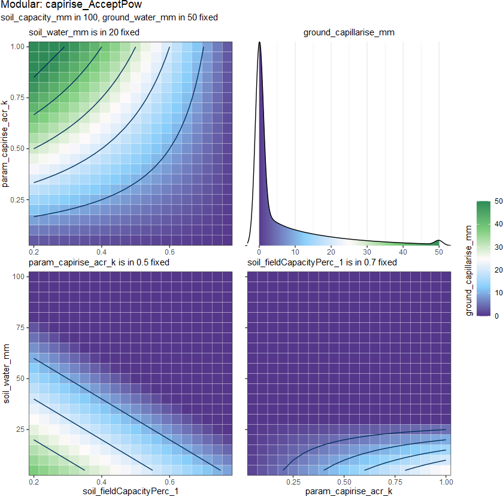
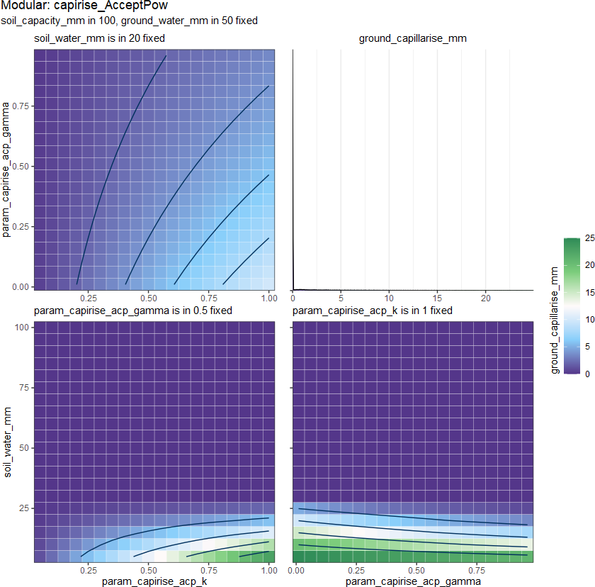

In hydrological modeling, capillary rise refers to the process by which water is drawn upward from groundwater (table) through the soil due to the force of capillary action. In conceptual watershed models, the capillary rise term often refers to a process that moves water from lower to higher soil water stores, which may also implicitly include lateral groundwater flow processes in a sloping domain.
It can be calculated by the water in the ground layer \(W_{grnd}\), which can also be treated as part of \(W_{grnd}\). There are not many methods to describe this process. Most HMs ignore this process, perhaps because it is not significant in most situations, or because the process of percolation can deal with this process at the same time.
So we can give the function from:
\[F_{capi} = f_{capirise}(D_{grnd}, D_{soil})\]
to:
\[F_{capi} = f_{capirise}(W_{grnd}, W_{soil}, C_{soil}, ...)\] \[F_{capi} \leq W_{grnd}\] \[F_{capi} \leq C_{soil} - W_{soil}\]
where
\(F_{capi}\) is
ground_capirise_mm\(W_{grnd}\) is
ground_water_mm\(W_{soil}\) is
water_soil_mm\(C_{soil}\) is
capacity_soil_mm
The output density distribution from 4 methods:

Usage
capirise_HBV(
ground_water_mm,
soil_water_mm,
soil_capacity_mm,
soil_potentialCapirise_mm
)
capirise_HBVfix(
ground_water_mm,
soil_water_mm,
soil_capacity_mm,
soil_fieldCapacityPerc_1,
soil_potentialCapirise_mm
)
capirise_AcceptRatio(
ground_water_mm,
soil_water_mm,
soil_capacity_mm,
soil_fieldCapacityPerc_1,
param_capirise_acr_k
)
capirise_AcceptPow(
ground_water_mm,
soil_water_mm,
soil_capacity_mm,
soil_fieldCapacityPerc_1,
param_capirise_acp_k,
param_capirise_acp_gamma
)Arguments
- ground_water_mm
(mm/m2/TS) water volume in
groundLy- soil_water_mm
(mm/m2) water volume in
soilLy- soil_capacity_mm
(mm/m2) average soil Capacity (maximal storage capacity)
- soil_potentialCapirise_mm
<0.01, 7> (mm/m2/TS) potential capillary rise
- soil_fieldCapacityPerc_1
<0, 1> the relative ratio (\(\theta_fc / \theta^*\)) that the water content can drainage by gravity
- param_capirise_acr_k
<0.01, 1> coefficient parameter
capirise_AcceptRatio()- param_capirise_acp_k
<0.01, 1> coefficient parameter for
capirise_AcceptPow()- param_capirise_acp_gamma
<0.01, 1> exponential parameter for
capirise_AcceptPow()
_HBV (Lindstroem et al. 1997) :

\[F_{capi} = M_{capi} \left( 1 - \frac{W_{soil}}{C_{soil}} \right)\] where
\(M_{capi}\) is
soil_potentialCapirise_mm
_HBVfix (Lindstroem et al. 1997) :

\[F_{capi} = M_{capi} \left( 1 - \frac{W_{soil}}{k_{fc}C_{soil}} \right), \quad W_{soil} < k_{fc}C_{soil}\] where
\(k_{fc}\) is
soil_fieldCapacityPerc_1
_AcceptRatio:

\[F_{capi} = k \left( W_{soil} - k_{fc}C_{soil} \right), \quad W_{soil} < k_{fc}C_{soil}\] where
\(k\) is
param_capirise_acr_k\(k_{fc}\) is
soil_fieldCapacityPerc_1

\[F_{capi} = k \left( W_{soil} - k_{fc}C_{soil} \right)^\gamma, \quad W_{soil} < k_{fc}C_{soil}\] where
\(k\) is
param_capirise_acp_k\(\gamma\) is
param_capirise_acp_gamma
References
Lindstroem G, Johansson B, Persson M, Gardelin M, Bergstroem S (1997). “Development and Test of the Distributed HBV-96 Hydrological Model.” Journal of Hydrology, 201, 272--288. doi: 10.1016/S0022-1694(97)00041-3 .